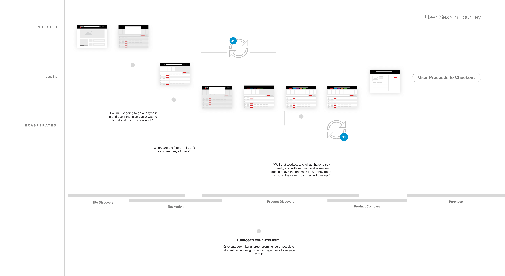
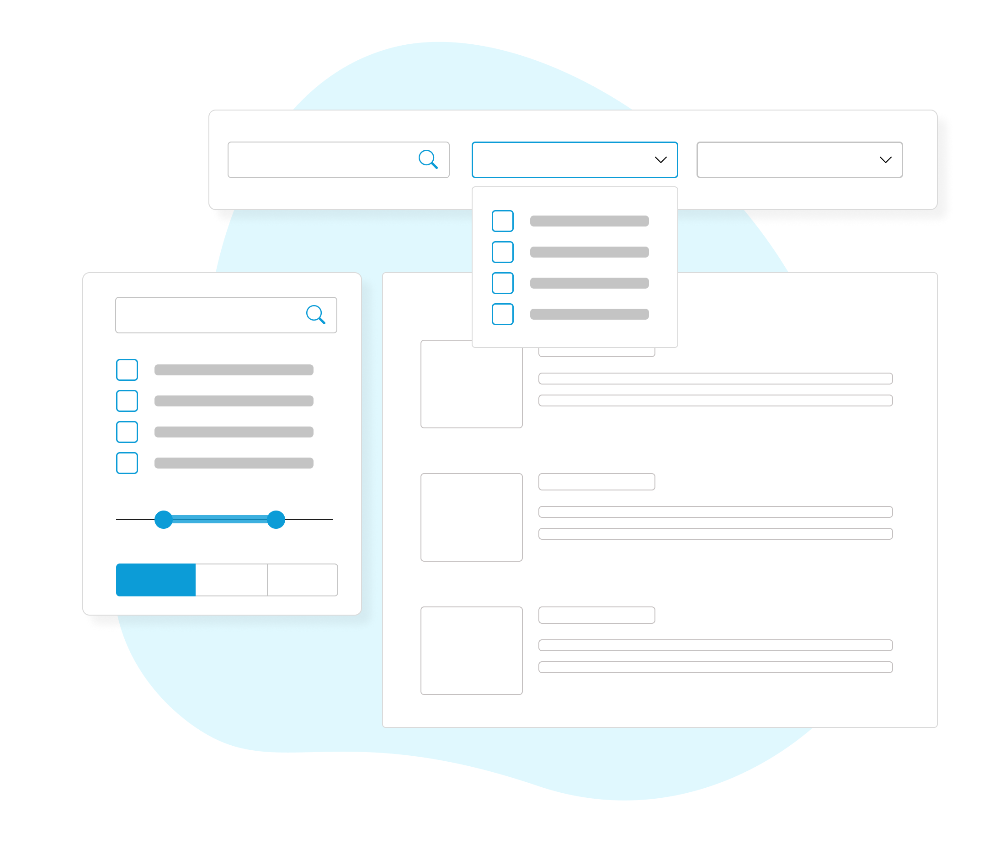

PROBLEM
'Where are the filters…'
Arrow.com has millions of parts on their site and each part is classified into a category and sub category. Due to the product library size, users MUST select a product category after a search term is entered to display relevant filters. Through user testing and google analytics, I realized users were missing this critical step in the search journey.

RESEARCH
Filter Best Practice
In an ideal experience, users would not have to select a category and the filters would appear based on the user search term (magic!). Due to time, I knew that was not something I would be able to quickly solve or pitch to my team as an ‘MVP’ solution.
Instead, I wondered if there was a way to solve this problem through the user flow and/or interface. I started researching how other companies with large product libraries were solving this problem.

TESTING
Competitor Analysis
I conducted an unmoderated remote user test with 15 electrical engineers. They were asked to search for a specific part on our website, a competitor’s website and amazon.
The goal of the test was to determine:
- When in the user journey should we display part categories
- Where is the best place to display part categories and other filters
Users expressed that it felt 'disjointed' to stop them before reaching their search results and preferred the categories displayed on the result page. They also preferred the filters above the results, believing that they would overlook the filters if they were on the left rail.
SOLUTION
Interface Design
To increase user engagement, I prioritized the category filter on the search page. To reduce user frustration and time spent on page, I pulled the filter to the top of the page and designed a different visual treatment. Users could select a category and drill down into subcategories until they found the specific filters needed. We tested this feature by running an AB test against the original design.
OPTION A

OPTION B

We declared OPTION B was declared the winner, doubling engagement from the original design.